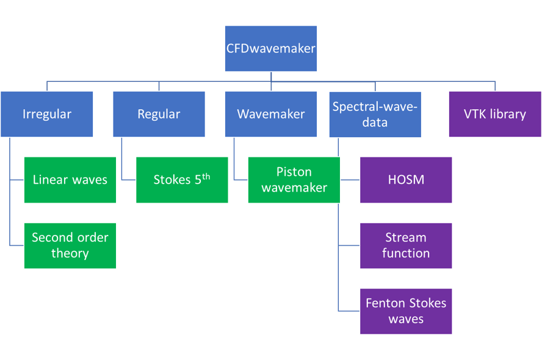

7. Wave theories¶

Fig. 7.1 Overview of theories implemented (or to be implmented) in CFDwavemaker¶
7.1. Irregular wave theory¶
7.1.1. Linear potential wave theory¶
Linear wave theory, also known as Airy waves has been widely used for more than 50 years for describing irregular waves. Documentation of this theory exists in a number of places and therefore this will not be further adressed here. Reference is made to Wikipedia for a nice overview of this theory. Other sources are [1][2]